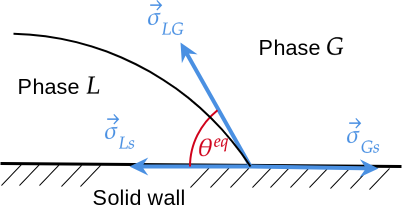
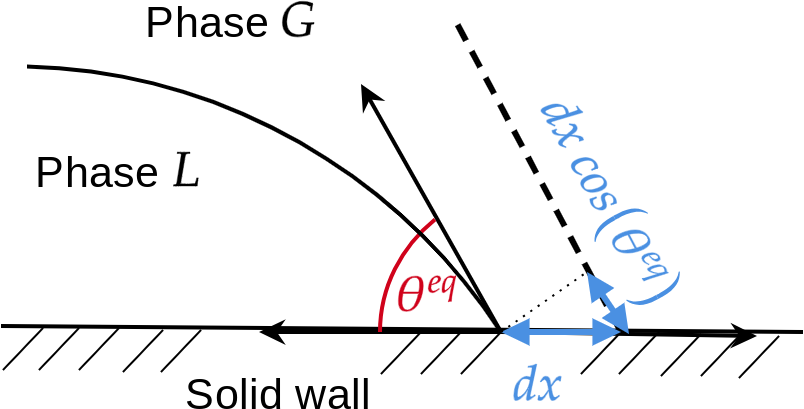
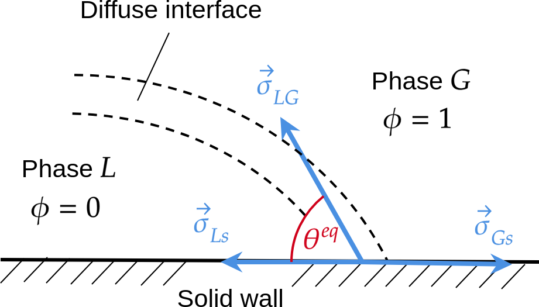

Contact angle and Marangoni force
Contact angle
Law of Young-Dupré
Law of Young-Dupré
When a liquid (phase \(L\)) and a gas (phase \(G\)) are in contact with a solid wall, there is an equilibrium angle \(\theta^{eq}\) corresponding to the equilibrium of three capillary forces \(\vec{\sigma}_{Ls}\) the capillary force between Liquid and solid, \(\vec{\sigma}_{Gs}\) the capillary force between Gas and solid, and \(\vec{\sigma}_{LG}\) the capillary force between Liquid and Gas (see Fig. Fig. 62). The contact angle \(\theta^{eq}\) can be expressed with the three surface tensions by the Young-Dupré law. Its derivation (see [1]) can be performed with the work \(d\mathcal{W}\) of a small displacement \(dx\) (see Fig. Fig. 63):
At equilibrium \(d\mathcal{W}=0\) and we obtain:
{kind=link}

Fig. 62 Contact angle
{kind=link}

Fig. 63 Derivation of Young-Dupré Law
Boundary condition for diffuse interface
Wall free energy
In the case of phase-field theory, the interface is diffuse (see Fig. 64) and the minimization is now carried out with an additional free energy: the wall free energy \(\mathscr{F}+\mathscr{F}_{w}\) where
where \(d(\partial V)\) is the wall surface, and \(p(\phi)\) is the interpolation polynomial \(p(\phi)=\phi^{2}(3-2\phi)\). The variation \(\delta(\mathscr{F}+\mathscr{F}_{w})/\delta\phi\) yields:
where \(\hat{\boldsymbol{n}}\) is the normal vector at the wall boundary. After using the Young-Dupré law, we obtain the boundary condition for the phase-field \(\phi\) at the solid surface:
Remark: if \(\theta^{eq}=90{^\circ}\) then \(\boldsymbol{\nabla}\phi\cdot\hat{\boldsymbol{n}}=0\)
{kind=link}

Fig. 64 Contact angle for diffuse interface
Marangoni force
Difference of normal stress tensor between liquid and gas
where
\(\overline{\overline{\boldsymbol{T}}}_{\Phi}=-p_{\Phi}\overline{\overline{\boldsymbol{I}}}+\eta_{\Phi}(\boldsymbol{\nabla}\boldsymbol{u}+\boldsymbol{\nabla}\boldsymbol{u}^{T})\): stress tensor with \(\Phi=l,g\)
\(\hat{\boldsymbol{n}}\): normal vector
\(\kappa=\boldsymbol{\nabla}\cdot\hat{\boldsymbol{n}}\): interface curvature
\(\boldsymbol{\nabla}_{S}\,\hat{=}\,\boldsymbol{\nabla}-\hat{\boldsymbol{n}}(\hat{\boldsymbol{n}}\cdot\boldsymbol{\nabla})\): gradient along surface
In Eq. (519), if \(\sigma\) is a function of composition \(\sigma(c(\boldsymbol{x},t))\) or temperature \(\sigma(T(\boldsymbol{x},t))\), then
Usual function of \(\sigma\) as function of \(c\) or \(T\)
Marangoni force in the phase-field framework
Proof for \(\boldsymbol{F}_{M}\)
In (524) use definition of
Use definition of
with chain rule for \(\boldsymbol{\nabla}\sigma=(\partial\sigma/\partial c)\boldsymbol{\nabla}c\)
References
Section author: Alain Cartalade